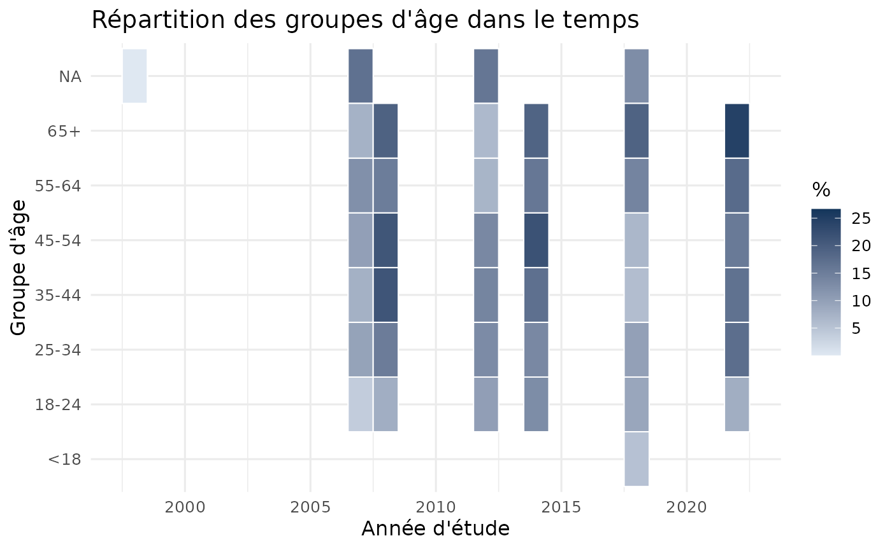
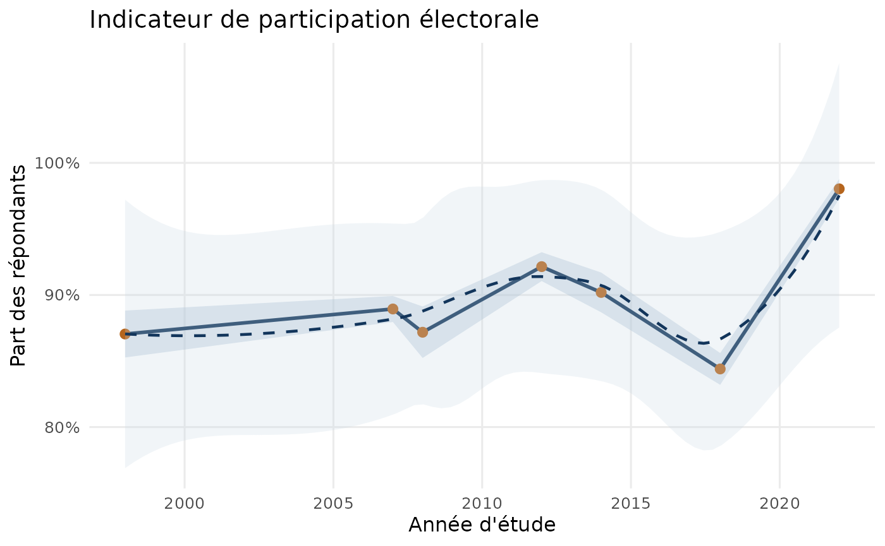

Chargement des données fusionnées
master <- if (file.exists("qes_master.csv")) {
read.csv("qes_master.csv", stringsAsFactors = FALSE)
} else {
get_qes_master(assign_global = FALSE, strict = FALSE, quiet = TRUE)
}
parser_turnout <- function(x) {
brut <- trimws(as.character(x))
norm <- tolower(iconv(brut, from = "", to = "ASCII//TRANSLIT"))
out <- rep(NA_real_, length(norm))
as_num <- suppressWarnings(as.numeric(brut))
is_num <- is.finite(as_num)
if (any(is_num)) {
uniq <- unique(as_num[is_num])
if (all(uniq %in% c(0, 1))) {
out[is_num] <- as_num[is_num]
}
}
non_hit <- grepl("^(0|2|non|no)$|n[' ]?a pas vot|did not vot|didn[' ]?t vot|annule|ne votera pas", norm, perl = TRUE)
oui_hit <- grepl("^(1|oui|yes)$|\\boui\\b|\\byes\\b|already voted|par anticipation|le jour meme|certain to vote", norm, perl = TRUE)
out[non_hit] <- 0
out[oui_hit & !non_hit] <- 1
out
}
master <- master %>%
mutate(
annee = suppressWarnings(as.integer(sub("^([0-9]{4}).*$", "\\1", qes_year))),
age_group = trimws(as.character(age_group)),
turnout_num = parser_turnout(turnout)
)
# qes_crop_2007_2010 est un fichier regroupé sans variable d'année par ligne.
# On le garde dans les tableaux par étude, mais pas dans les tendances annuelles.
master_tendance <- master %>%
filter(qes_code != "qes_crop_2007_2010")
Taille des échantillons
tailles <- master %>%
group_by(qes_year, qes_code, qes_name_en) %>%
summarise(n = n(), .groups = "drop") %>%
arrange(qes_year, qes_code)
knitr::kable(tailles, caption = "Taille d'échantillon par étude")
Taille d’échantillon par étude
| 1998 |
qes1998 |
Quebec Elections 1998 |
1483 |
| 2007 |
qes2007 |
Quebec Election Study 2007 |
2175 |
| 2007 |
qes2007_panel |
Quebec Election Study 2007 Panel |
2062 |
| 2007-2010 |
qes_crop_2007_2010 |
CROP Quebec Opinion Polls (2007-2010) |
24026 |
| 2008 |
qes2008 |
Quebec Election Study 2008 |
1151 |
| 2012 |
qes2012 |
Quebec Election Study 2012 |
1505 |
| 2012 |
qes2012_panel |
Quebec Election Study 2012 Panel |
844 |
| 2014 |
qes2014 |
Quebec Election Study 2014 |
1517 |
| 2018 |
qes2018 |
Quebec Election Study 2018 |
3072 |
| 2018 |
qes2018_panel |
Quebec Election Study 2018 Panel |
1250 |
| 2022 |
qes2022 |
Quebec Election Study 2022 |
1521 |
Répartition des groupes d’âge
Répartition des groupes d’âge (premières lignes)
| 1998 |
65 ANS ET PLUS |
234 |
15.8 |
| 1998 |
DE 18 A 24 ANS |
128 |
8.6 |
| 1998 |
DE 25 A 34 ANS |
247 |
16.7 |
| 1998 |
DE 35 A 44 ANS |
395 |
26.6 |
| 1998 |
DE 45 A 54 ANS |
299 |
20.2 |
| 1998 |
DE 55 A 64 ANS |
179 |
12.1 |
| 1998 |
REFUS/PAS DE REPONSE |
1 |
0.1 |
| 2007 |
18-24 |
159 |
3.8 |
| 2007 |
18-34 ans |
439 |
10.5 |
| 2007 |
25-34 |
403 |
9.6 |
| 2007 |
35-44 |
320 |
7.6 |
| 2007 |
35-54 ans |
914 |
21.8 |
| 2007 |
45-54 |
422 |
10.1 |
| 2007 |
55 ans et plus |
709 |
16.9 |
| 2007 |
55-64 |
517 |
12.3 |
| 2007 |
65+ |
314 |
7.5 |
| 2008 |
18-24 |
90 |
8.0 |
| 2008 |
25-34 |
171 |
15.2 |
| 2008 |
35-44 |
239 |
21.2 |
| 2008 |
45-54 |
238 |
21.2 |
| 2008 |
55-64 |
170 |
15.1 |
| 2008 |
65+ |
217 |
19.3 |
| 2012 |
18-24 |
240 |
10.2 |
| 2012 |
18-34 |
127 |
5.4 |
| 2012 |
25-34 |
305 |
13.0 |
| 2012 |
35-44 |
328 |
14.0 |
| 2012 |
35-54 |
339 |
14.4 |
| 2012 |
45-54 |
315 |
13.4 |
ggplot(age_dist, aes(x = annee, y = pct, color = age_group, group = age_group)) +
geom_line(linewidth = 0.9) +
geom_point(size = 1.5) +
labs(
title = "Répartition des groupes d'âge dans le temps",
x = "Année d'étude",
y = "Pourcentage",
color = "Groupe d'âge"
) +
theme_minimal(base_size = 12)

Participation électorale par année
annees <- data.frame(annee = sort(unique(master_tendance$annee[!is.na(master_tendance$annee)])))
turnout_annee <- master_tendance %>%
filter(!is.na(annee)) %>%
group_by(annee) %>%
summarise(
repondants = n(),
n_avec_turnout = sum(!is.na(turnout_num)),
taux = ifelse(n_avec_turnout > 0, mean(turnout_num, na.rm = TRUE), NA_real_),
.groups = "drop"
)
turnout_annee <- merge(annees, turnout_annee, by = "annee", all.x = TRUE, sort = TRUE)
knitr::kable(
turnout_annee %>% mutate(taux_pct = round(100 * taux, 1)),
col.names = c("Année", "Répondants", "N avec mesure", "Taux", "Taux (%)"),
caption = "Indicateur de participation par année"
)
Indicateur de participation par année
| 1998 |
1483 |
1374 |
0.8704512 |
87.0 |
| 2007 |
4237 |
3897 |
0.8894021 |
88.9 |
| 2008 |
1151 |
1131 |
0.8717949 |
87.2 |
| 2012 |
2349 |
2330 |
0.9214592 |
92.1 |
| 2014 |
1517 |
1499 |
0.9019346 |
90.2 |
| 2018 |
4322 |
1826 |
0.1527930 |
15.3 |
| 2022 |
1521 |
1322 |
0.9803328 |
98.0 |
ggplot(turnout_annee, aes(x = annee, y = taux)) +
geom_line(linewidth = 1, color = "#12355b", na.rm = TRUE) +
geom_point(size = 2.3, color = "#b5651d", na.rm = TRUE) +
scale_y_continuous(labels = function(x) paste0(round(100 * x, 0), "%")) +
labs(
title = "Indicateur de participation électorale",
x = "Année d'étude",
y = "Part des répondants"
) +
theme_minimal(base_size = 12)

Notes
-
qes_crop_2007_2010 est exclu des tableaux et graphiques
par année parce que ce fichier ne contient pas d’année au niveau des
répondants.